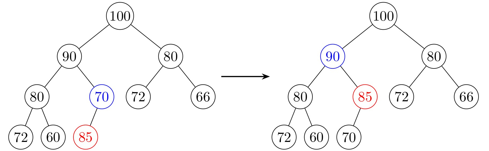
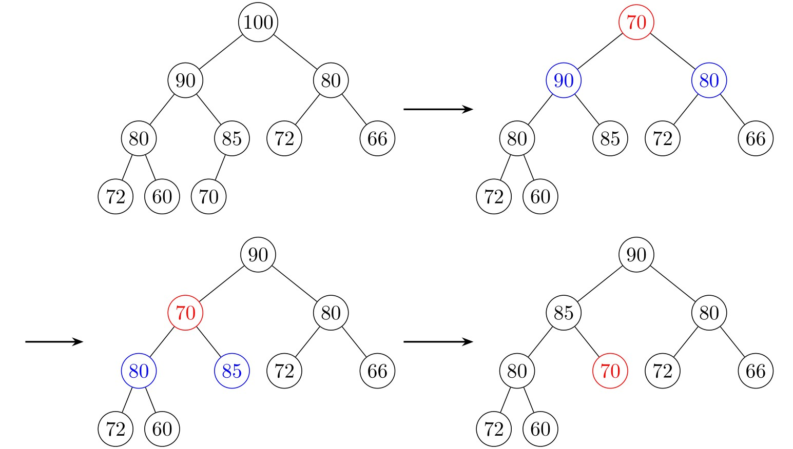
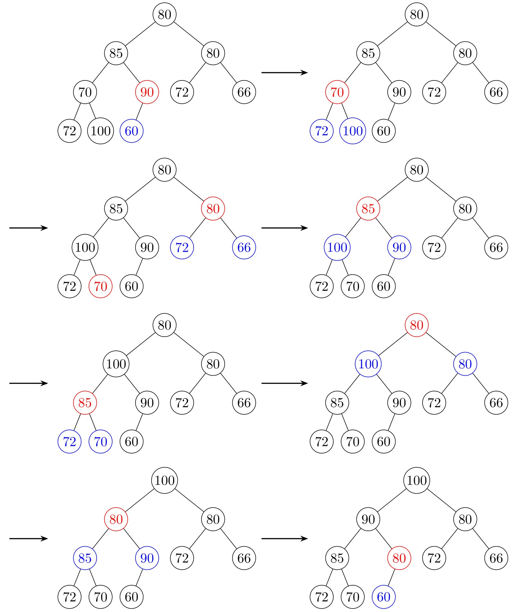

定义
堆是一种数据结构，一般组织为树或者森林，具有以下性质：任意一个节点的值大于或者等于其孩子节点。常见的堆有二叉堆、二项堆、斐波拉契堆，不指明是何种堆一般为二叉堆。本文只描写二叉堆，以下简称为堆。
堆组织成完全二叉树，存储结构为顺序表，更具体地，堆是按层序存储于数组中的完全二叉树，且满足性质：任意一个节点的值大于或者等于其左右孩子的值。以下为一个堆(小顶堆，而非文中所用大顶堆，用于示范下标的关系)的存储情况的典型案例：
|
|
存储为一个数组：
|
|
由这棵完全二叉树可以得到孩子节点与父节点下标的计算：
(1) 节点i的左孩子节点为: 2i + 1;
(2) 节点i的右孩子节点为: 2i + 2;
(3) 节点i的父节点为: (i - 1) / 2;
(4) 长度为n的数组的最后一个非叶子节点为: (n - 2) / 2 = n / 2 - 1.
堆的操作
向堆中添加元素--pushHeap
假定数组前n个元素已经成堆，将数组第n+1个元素添加到堆中，此时只有最后一个元素和它的父节点可能不符合堆的定义，需要向上调整(siftUp)。调整的方法为：设需要调整的节点为i，则其父节点为(i-1)/2，比较A[i]和A[(i-1)/2]，若A[i]>A[(i-1)/2]，则交换它们，否则返回，若将它交换到父节点的位置则继续向上调整。
|
|
取出堆顶元素--popHeap
假定数组前n个元素已经成堆，由堆的性质，A[0]必然是这n个元素中最大的一个，现在我们将A[0]取出并使剩余的元素成堆。一般而言，我们不缩小数组的规模，因此无论用户将A[0]作何用处，调用popHeap时都将它移动到A[n-1]处，而使数组的前n-1个元素成堆。具体的做法是交换A[0]和A[n-1]，此时只有A[0]和其孩子不满足堆的定义，只需要从A[0]开始向下调整(siftDown)一次即可。
调整的方法为：设需要调用的节点为i，则其孩子节点为2i+1和2i+2；如果两个孩子都不存在，则结束调整，如果左孩子存在而右孩子不存在，则令j=2i+1，如果左孩子和右孩子都存在，则令j为左孩子和右孩子中较大者的下标。然后比较A[i]和A[j]，若A[i]>=A[j]则已满足堆的定义可返回，否则交换A[i]和A[j]，然后令i=j继续往下调整。
|
|
建堆--makeHeap
一个有n个元素的数组，将它处理成堆。一种方法是递归创建，本质上堆是一棵完全二叉树，要将一个数组处理成堆，可以先将左右子树各自处理成堆，此时只有根节点可能不满足堆的性质，因此再从根节点开始做一次siftDown即可。
|
|
另一种方法是将上述过程换个顺序而得到非递归的版本。显然，上面的算法其实就是从最后一个非叶子节点开始向前依次做一次siftDown：1、叶子节点本身是一个堆；2、调用siftDown将高度为2的子树合并成堆；3、调用siftDown将高度为3的子树合并成堆(其左右子树在之前就已经成堆)；依此类推则可使整个数组成堆。
|
|
堆的操作的图示
向堆中添加元素--pushHeap

交换85和其父节点70后已经成堆(86<41，不用继续向上调整)。
取出堆顶元素--popHeap
将100和数组最后一个元素70交换后，缩小堆的规模，100超出堆的范围。然后从70开始向下调整。对于每个需要调整的节点，选择最大的孩子节点，如果比孩子节点大或者没有孩子节点则结束调整，否则交换它和孩子节点的值，然后在交换后的节点上继续向下调整。

建堆--makeHeap
将数组{80, 85, 80, 70, 90, 72, 66, 72, 100, 60}调整成堆，它对应的完全二叉树如下，从最后一个非叶子节点向前依次做siftDown即可。

堆排序
堆排序是一种时间复杂度为O(n logn)，空间复杂度为O(1)的不稳定排序算法，其思路为对数组建堆，然后逐个弹出其堆顶元素，当堆的规模缩小到1时数组已有序。
|
|
为什么堆不是稳定的的排序算法呢？主要原因在于做siftDown时，假定A[i]和A[2*i+1]交换，而A[2*i+1]==A[2*i+3]，A[2*i+1]更靠近堆顶，极有可能先被弹出堆，则排序之后它在A[2*i+3]之后，它们的顺序已变，故堆排序不稳定。
优先队列
优先队列只需要对堆进行简单地封装即可。
|
|
其中replaceTop函数用于删除堆顶元素再添加一个新值，c++标准库中的优先队列无此功能，必须先调用pop将堆顶元素弹出，再调用push添加一个新元素，需要多做一次siftUp。
c++标准库中的优先队列
c++标准库中的优先队列定义于头文件queue，定义为：
|
|
常用的构造函数有
|
|
其中compare为比较函数，默认为std::less，即小于函数，得到的堆是大顶堆，和前面所述一致，如果需要小顶堆，可以这样定义：
|
|
或者
|
|
建堆的时间复杂度
建堆的时间复杂度为O(n)，这是怎样得到的呢？
最简单的办法是把建堆的过程看成递归的：先左子树建堆，再右子树建堆，然后从根节点开始做一次siftDown，那么时间复杂度为$T(n)=2T(n/2)+ \log{n} = O(n)$。
另一种方法是考虑每层节点的比较次数，以满二叉树为标准考虑，最后一层有n/2个元素，向下比较0次，倒数第二层有n/4个元素，向下比较1次，...，第1层有1个元素，向下比较log n-1次，所以比较次数为：
$$ T(n) = \frac{n}{4} \times 1 + \frac{n}{8} \times 2 + \frac{n}{16} \times 3 + \cdots + \frac{n}{2^{\log{n}}} \times (\log{n} − 1) = n \times \sum_{i=2}^{\log{n}} \frac{i−1}{2^i} $$
令
$$ S = \sum_{i=2}^{\log{n}} \frac{i−1}{2^i}, $$
则
$$ 2S = \sum_{i=2}^{\log{n}} \frac{i−1}{2^{i−1}} = \sum_{i=1}^{\log{n} - 1} \frac{i}{2^i}, $$
所以
$$ S = 2S − S = \frac{1}{2} − \frac{\log{n} − 1}{n} + \sum_{i=2}^{\log{n}−1} \frac{1}{2^i} = \frac{1}{2} − \frac{\log{n} − 1}{n} + \frac{1}{2} − \frac{1}{2n} = 1 + \frac{1}{2n} − \log{n} $$
因此$T(n) = n + 1/2 - \log{n} = O(n)$。
此外，如何推导$T(n) = 2T(n/2) + \log{n} = O(n)$呢？
将T(n)多迭代几次得：
$$ T(n) = 4T(\frac{n}{4}) + 2 \log{\frac{n}{2}} + \log{n} = \cdots = nT(1) + n \log{1} + \frac{n}{2} \log{2} + \cdots + 2 \log{\frac{n}{2}} + \log{n} $$
令
$$ S = n \log{1} + \frac{n}{2} \log{2} + \cdots + 2 \log{\frac{n}{2}} + \log{n} = \sum_{i=0}^{\log{n}} 2^i \log{\frac{n}{2^i}} = \sum_{i=0}^{\log{n}} 2^i \log{\frac{n}{2^i}} = \sum_{i=0}^{\log{n}} \frac{nj}{2^j} $$
则
$$ 2S = \sum_{i=0}^{\log{n}} \frac{nj}{2^{j−1}} = \sum_{i=−1}^{\log{n}−1} \frac{n(j+1)}{2^j}, $$
所以
$$ S = 2S − S = 0 − \log{n} + \sum_{i=0}^{\log{n}−1} \frac{n}{2^j} = 0 − \log{n} + 2n − 2 = 2n − \log{n−2} $$
所以$T(n)=O(n)$。
完整代码
|
|